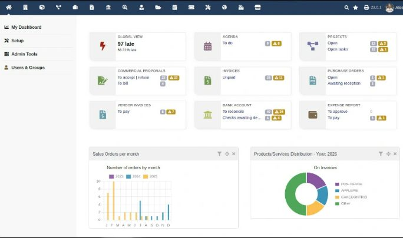

Início › Plataformas › Dolibarr
ERP · Dolibarr · open source
ERP completo, sem licença por usuário, no ar em 30 dias.
Pedidos, compras, estoque, produção, faturamento e financeiro em um só sistema, com cadastros migrados das suas planilhas. O Dolibarr é aberto e modular: você paga pela implantação e pela operação, não por usuário.

Para quem é
Para quem saiu da planilha, mas não quer um ERP caro e engessado.
Indústrias pequenas e médias, oficinas, distribuidores e empresas de engenharia que precisam de controle sem pagar mensalidade por cabeça.
Hoje: Margem descoberta no fim do mês. Cada área tem um número diferente.
Com Dolibarr: Pedido, custo e faturamento no mesmo lugar, com margem por pedido e centro de custo.
Hoje: Falta material na produção e sobra o que não gira.
Com Dolibarr: Estoque por depósito, pedidos de compra a partir da necessidade e alerta de estoque mínimo.
Hoje: Contas a pagar e a receber em planilhas separadas, conciliação manual.
Com Dolibarr: Faturas, pagamentos e bancos integrados, com conciliação e fluxo de caixa.
Módulos e funcionalidades
Os módulos que ativamos e configuramos
O Dolibarr é modular: ativamos só o que a operação usa e configuramos cadastros, numerações, permissões e relatórios para cada área.
Terceiros e contatos
Clientes, fornecedores e prospects com histórico completo.
Categorias, condições de pagamento e tabelas de preço.
Propostas e pedidos de venda
Orçamento, aprovação e pedido com geração de PDF no seu modelo.
Modelos de documento, descontos e fluxo de aprovação.
Compras
Solicitação, pedido de compra, recebimento e fatura de fornecedor.
Aprovação por valor e vínculo com estoque e centro de custo.
Produtos e estoque
Multi-depósito, lotes e números de série, inventário e movimentações.
Estoque mínimo, unidades e valorização.
BOM e ordens de produção
Lista de materiais, ordem de fabricação, consumo e produção.
BOMs vindas do Aras ou cadastradas, com custo-padrão.
Faturamento
Faturas de cliente, notas de crédito e recorrência.
Integração com emissor de NF-e homologado.
Bancos e caixa
Contas bancárias, pagamentos, recebimentos e conciliação.
Plano de contas, extratos e previsões.
Projetos e centros de custo
Custos e receitas por projeto, unidade ou linha de negócio.
Um centro de custo por linha, sem lançamento cruzado.
Despesas e equipe
Relatórios de despesas, férias e apontamentos.
Aprovação de reembolsos e políticas por cargo.
Emissão de NF-e e obrigações fiscais brasileiras: integramos o Dolibarr a um emissor homologado (módulo de terceiros ou API do emissor). A escolha é feita no diagnóstico, conforme o regime tributário e o seu contador.
Processo de ponta a ponta
Do orçamento ao dinheiro no caixa.
O ciclo completo de venda sob encomenda, como implantamos em indústrias que fabricam por pedido.
Orçamento com preço, prazo e PDF no seu modelo.
Dolibarr · EspoCRMProposta aceita vira pedido com um clique.
DolibarrOrdem de fabricação consome a BOM e reserva material.
Dolibarr · MRPFalta de material gera pedido ao fornecedor.
DolibarrEnvio, nota fiscal e baixa de estoque.
Dolibarr + emissorConta a receber, conciliação e margem real.
Dolibarr → BITelas e estrutura
Telas do Dolibarr
Integrações
Dolibarr conectado ao resto da empresa
Integrações por API, com fila e registro de cada troca. Se algo falha, a mensagem fica retida e você recebe um alerta. Nada se perde no caminho.
Itens e BOM de manufatura liberados chegam ao ERP. Custos e saldos voltam para a análise de impacto de ECO.
Cliente e oportunidade ganha viram terceiro e pedido. Status de faturamento volta ao CRM.
Horas apontadas viram custo no projeto e no centro de custo.
Emissão de notas por emissor homologado e importação de extratos para conciliação.
Faturamento, margem, estoque e fluxo de caixa sem exportar planilha.
Pedidos e estoque sincronizados com a loja, quando houver.
Inteligência artificial e BI
ERP que lê documentos e avisa antes do problema.
IAAssistentes e automações
- Leitura de NF e pedidos: PDF ou XML de fornecedor vira lançamento pronto para conferência.
- Conciliação sugerida: o assistente casa extrato e títulos em aberto e mostra o que ficou pendente.
- Previsão de demanda: sugere a reposição de estoque com base no histórico e nos pedidos em carteira.
- Perguntas ao ERP: “quanto faturamos com o cliente X este ano e qual a margem?”, respondido com os números do sistema.
- Cobrança assistida: mensagens de cobrança personalizadas para títulos vencidos, com aprovação humana.
Integração com IA: R$ 6.900 de setup + R$ 290/mês, mais o consumo de API do modelo, repassado sem margem. As respostas respeitam o perfil de acesso de quem pergunta e não treinam modelos de terceiros. Como funciona a IA
BIIndicadores entregues
- Faturamento e margem por pedido, cliente, produto e centro de custo.
- Fluxo de caixa realizado e projetado para 90 dias.
- Estoque giro, cobertura em dias e itens parados.
- Compras prazo de fornecedor e variação de preço.
- Inadimplência carteira vencida por faixa de atraso.
BI de dados: R$ 2.900 de setup + R$ 490/mês. Painéis em Metabase ou Power BI, com alertas por e-mail e WhatsApp. Exemplo de painel
Infraestrutura
Leve, rápido e barato de hospedar.
O Dolibarr roda em Linux com PHP e MariaDB/MySQL. Empacotamos em contêiner, com atualização testada em homologação e backup diário. Você acessa pelo navegador, no subdomínio da sua empresa.
Dimensionamento recomendado
| Uso | Ambiente | Mensal |
|---|---|---|
| Até 10 usuários | Servidor Zirconium P ou VM P | R$ 190 a 290 |
| 10 a 30 usuários | VM M · 4 vCPU / 8 GB | R$ 540 |
| ERP + CRM + Projetos | VM M (stack completa) | R$ 540 |
| Dados na empresa | Servidor local gerenciado | R$ 390 |
Setup de ambiente R$ 690 (uma vez). Backup externo R$ 0,50/GB/mês, mínimo R$ 60.
Implantação
Quatro semanas, com o ERP em uso no fim.
A Implantação Essencial cobre um sistema para até 10 usuários, em cerca de 40 horas. O ERP entra em produção com os cadastros migrados e a equipe treinada.
Entregáveis
- Dolibarr instalado no ambiente escolhido
- Cadastros e saldos migrados
- Modelos de documento com a sua marca
- Permissões por área e usuário
- Integração com emissor de NF-e
- Treinamento e manual rápido por função
Processos mapeados, módulos definidos, importação de clientes, fornecedores e produtos.
Modelos de proposta e pedido, aprovações, depósitos e saldos iniciais.
BOMs, ordens de fabricação, bancos, contas em aberto e integração fiscal.
Turma de usuários, operação assistida e ajustes finos.
Investimento
Dolibarr: preço fechado e mensalidade previsível.
Preço fechado por projeto, depois do diagnóstico. Setup pago 50% na assinatura e 50% na entrega.
| Serviço | Modelo | Preço |
|---|---|---|
| Implantação Essencial (1 sistema, até 10 usuários, ~40 h) | Projeto | R$ 6.900 |
| Implantação Integrada (ERP + CRM + Projetos, ~100 h) | Projeto | R$ 16.900 |
| Banco de 20 h de customização | Pré-pago | R$ 3.400 |
| Treinamento (4 h, até 8 pessoas) | Avulso | R$ 1.200 |
| Suporte Básico (4 h) / Pro (10 h) | Assinatura | R$ 690 / R$ 1.590 por mês |
| Sustentação por usuário | Assinatura | R$ 25/usuário/mês (mín. R$ 250) |
| Hora técnica | Avulso | R$ 180/h |
| Hospedagem gerenciada | Assinatura | a partir de R$ 190/mês |
Pacote Stack Indústria: Implantação Integrada + VM M + Suporte Básico = R$ 1.230/mês após o setup de R$ 16.900.
Dúvidas
Perguntas sobre Dolibarr
O Dolibarr emite nota fiscal eletrônica?
A emissão é feita por integração com um emissor homologado, via módulo de terceiros ou API. Definimos a solução no diagnóstico, conforme o regime tributário e o contador.
Serve para indústria?
Sim. Os módulos de BOM e ordens de produção cobrem a fabricação sob encomenda e a reposição de estoque. Para engenharia de produto mais complexa, integramos com o Aras.
Quantos usuários posso ter?
Quantos precisar. Não há licença por usuário. O que muda com o volume é o tamanho do servidor e, acima de 10 usuários, a sustentação.
E se eu quiser sair?
O banco de dados é seu. Entregamos exportação completa e o procedimento de restauração documentado.
Pronto para tirar a empresa das planilhas?
Diagnóstico gratuito de 45 minutos. Respondemos em até 1 dia útil.